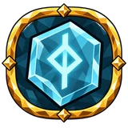
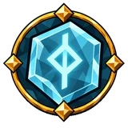
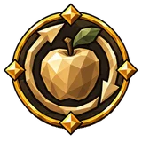
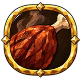
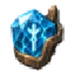

Рунный щит¶
Защитный слой, поглощающий урон после сопротивлений, но перед блоком и бронёй. Урон духом и ядом проходит сквозь него. После паузы без урона щит восстанавливается; задержка и регенерация управляют этим восстановлением.
Как это работает¶
Рунный щит — слой поверх вашего здоровья. От попадания, прошедшего через блок, сопротивления и броню, он забирает всё, кроме урона духом и ядом, пока не кончится; остальное идёт в здоровье. Пока он держится, получаемое оглушение снижается на 50%.
Эффекты щита Valheim (например, от Посоха защиты) становятся оберегом на том, кто их получил: он поглощает урон в объёме Valheim, весь, кроме духовного и ядовитого, на время Valheim (на вас — дольше с длительностью баффов, не больше × 3). Пока держится оберег, получаемое оглушение тоже снижается на 50%.
База по умолчанию 0 (настройка сервера): щит дают только древо, снаряжение и еда. Характеристики, переводящие здоровье в щит, дают максимальное здоровье × p ÷ (1 − p) для доли p, не больше 90%.
Полученный урон начинает ожидание заново. Через 5 с без урона щит восстанавливает 20% максимума в секунду (5 с с нуля), быстрее с регенерацией щита. Снижение задержки восстановления сокращает ожидание не больше чем на 75% и не ниже 0.25 с.
Вместе с другими механиками: Бой и строительство.
Ссылаются¶
Дерево навыков¶
Средние узлы¶
| Название | Эффект | |
|---|---|---|
| Броня и рунный щит | 15% увеличение брони 12.5% увеличение рунного щита |
|
 |
Венец руноведа | 12.5% увеличение рунного щита 12.5% увеличение рунного щита от экипированного: шлема |
 |
Знак на челе | 12.5% увеличение восстановления рунного щита −25% к паузе перед перезарядкой рунного щита при блокировании недавно |
| Кованое начертание | 10% увеличение брони от экипированного: нагрудника 12.5% увеличение рунного щита от экипированного: нагрудника |
|
| Кровь внутри круга | 7.5% увеличение максимума здоровья 12.5% увеличение рунного щита |
|
| Круг хранителя | +20 рунного щита | |
| Мантия двергра | +20 рунного щита 12.5% увеличение рунного щита от экипированного: нагрудника |
|
| Начертание венца | 12.5% увеличение восстановления рунного щита 12.5% увеличение рунного щита от экипированного: шлема 25% увеличение восстановления рунного щита при пассивном уклонении недавно |
|
| Оберег гальдра | 12.5% увеличение рунного щита +15 Интеллекта |
|
| Обновлённая руна | 12.5% увеличение восстановления рунного щита −12.5% к паузе перед перезарядкой рунного щита |
|
| Плащ рунной вязи | 20% увеличение регенерации эйтра 10% увеличение рейтинга уклонения 12.5% увеличение рунного щита +8 Ловкости +8 Интеллекта |
|
| Призрачное облачение | 30% увеличение рейтинга уклонения от экипированного: нагрудника 12.5% увеличение рунного щита от экипированного: нагрудника |
|
| Руна живой крови | −12.5% к паузе перед перезарядкой рунного щита | |
 |
Руна за трапезой | 15.625% увеличение рунного щита если сыт |
| Руна на изломе | −12.5% к паузе перед перезарядкой рунного щита +30% к эффекту лечения при низком рунном щите |
|
| Руна под сталью | 15% увеличение брони +20 рунного щита |
|
| Руна у ложа | +35 рунного щита если отдохнул | |
| Рунная подкладка | +20 рунного щита 12.5% увеличение восстановления рунного щита on spell cast недавно |
|
| Рунная скорлупа | +20 рунного щита 12.5% увеличение восстановления рунного щита |
|
| Рунный настой | 15.625% увеличение рунного щита под действием медовухи | |
| Рунокованая эгида | 15% увеличение брони 12.5% увеличение рунного щита 12.5% увеличение максимума эйтра +8 Интеллекта +8 Силы |
|
| Руны после сна | 15% увеличение Rested duration 2.5% увеличение восстановления рунного щита за каждую единицу заряда бодрости 2.5% увеличение восстановления рунного щита за каждые 10 единиц комфорт |
|
 |
Сила в пути | 20% увеличение сытности еды эйтра +1.25 рунного щита за каждые 50 единиц эйтра от еды 2.5% увеличение урона от стихий за каждые 15 единиц эйтра от еды |
| Сомкнутый круг | 12.5% увеличение рунного щита −12.5% к паузе перед перезарядкой рунного щита |
|
| Сосуд хранителя | +12.5 максимума эйтра 12.5% увеличение рунного щита |
|
| Тень за руной | 10% увеличение рейтинга уклонения 12.5% увеличение рунного щита −12.5% к паузе перед перезарядкой рунного щита |
|
| Ткань заклинателя | +20 рунного щита 12.5% увеличение рунного щита от экипированного: нагрудника |
|
| Тонкая грань руны | +20 рунного щита | |
| Туманный покров | 10% увеличение рейтинга уклонения 12.5% увеличение рунного щита |
|
| Уклонение и рунный щит | 10% увеличение рейтинга уклонения 12.5% увеличение рунного щита |
|
| Укрытие из знаков | 12.5% увеличение рунного щита | |
| Эйтровый оплот | 12.5% увеличение максимума эйтра 12.5% увеличение рунного щита |
|
| Ясный покров | −18.75% к паузе перед перезарядкой рунного щита при полном эйтре |
Мастерства¶
| Вариант | Эффект | |
|---|---|---|
| Между раной и руной | +10% запаса здоровья уходит в рунный щит |
Малые узлы¶
| Характеристика | Узлы |
|---|---|
| +8 рунного щита | 37 |
| 5% увеличение рунного щита | 35 |
| 5% увеличение восстановления рунного щита | 12 |
| −5% к паузе перед перезарядкой рунного щита | 9 |
| 6.25% увеличение рунного щита под действием медовухи | 6 |
| +14 рунного щита если отдохнул | 3 |
| 6.25% увеличение рунного щита если сыт | 3 |
Предметы¶
Уникальные предметы (3)¶
| Название | Эффект | Как получить | |
|---|---|---|---|
 |
Dead Crown Shard: Veil | (3–5)% увеличение рунного щита per Dead Crown Shard set into the tree, this one included | выпадает с: Яглут |
| Trail of the First Antler | одна из 10 характеристик среди них: +(1–2) рунного щита per allocated passive on the path from this socket to your start | выпадает с: Эйктюр | |
| Янтарь Первокорня | одна из 8 характеристик среди них: Allocated Small Passives in Radius also grant +(2–4) рунного щита одна из 8 характеристик |
выпадает с: Древний |
Свойства (53)
| Свойство | Тип | Выпадает на | С уровня предмета |
|---|---|---|---|
| #% к паузе перед перезарядкой рунного щита | Суффикс | должен быть: броня; одно из: на основе рунного щита | Луга (1) |
| #% к паузе перед перезарядкой рунного щита | Суффикс | должен быть: щит; одно из: на основе рунного щита | Луга (1) |
| #% к паузе перед перезарядкой рунного щита | Суффикс | должен быть: самоцвет and самоцвет Интеллекта | Луга (1) |
| #% к паузе перед перезарядкой рунного щита | Суффикс | должен быть: самоцвет and самоцвет Ловкости и Интеллекта | Луга (1) |
| #% к паузе перед перезарядкой рунного щита | Суффикс | должен быть: самоцвет and самоцвет Силы и Интеллекта | Луга (1) |
| #% к паузе перед перезарядкой рунного щита при блокировании недавно | Суффикс | должен быть: щит | Луга (1) |
| #% к паузе перед перезарядкой рунного щита при блокировании недавно | Суффикс | должен быть: броня; одно из: на основе рунного щита | Луга (1) |
| #% к паузе перед перезарядкой рунного щита при низком рунном щите | Суффикс | должен быть: броня; одно из: на основе рунного щита | Луга (1) |
| #% к паузе перед перезарядкой рунного щита при низком рунном щите | Суффикс | должен быть: щит; одно из: на основе рунного щита | Луга (1) |
| #% увеличение восстановления рунного щита | Суффикс | должен быть: броня; одно из: на основе рунного щита | Луга (1) |
| #% увеличение восстановления рунного щита | Суффикс | должен быть: щит; одно из: на основе рунного щита | Луга (1) |
| #% увеличение восстановления рунного щита | Суффикс | должен быть: самоцвет and самоцвет Интеллекта | Луга (1) |
| #% увеличение восстановления рунного щита | Суффикс | должен быть: самоцвет and самоцвет Ловкости и Интеллекта | Луга (1) |
| #% увеличение восстановления рунного щита | Суффикс | должен быть: самоцвет and самоцвет Силы и Интеллекта | Луга (1) |
| #% увеличение восстановления рунного щита | Префикс | должен быть: тринкет | Луга (1) |
| #% увеличение восстановления рунного щита за каждую единицу заряда бодрости | Суффикс | должен быть: броня; одно из: на основе рунного щита | Луга (1) |
| #% увеличение восстановления рунного щита за каждую единицу заряда бодрости | Суффикс | должен быть: щит; одно из: на основе рунного щита | Луга (1) |
| #% увеличение восстановления рунного щита при низком здоровье | Суффикс | должен быть: броня; одно из: на основе рунного щита | Луга (1) |
| #% увеличение восстановления рунного щита при низком здоровье | Суффикс | должен быть: щит; одно из: на основе рунного щита | Луга (1) |
| #% увеличение восстановления рунного щита при низком рунном щите | Суффикс | должен быть: броня; одно из: на основе рунного щита | Луга (1) |
| #% увеличение восстановления рунного щита при низком рунном щите | Суффикс | должен быть: щит; одно из: на основе рунного щита | Луга (1) |
| #% увеличение восстановления рунного щита при полном здоровье | Суффикс | должен быть: броня; одно из: на основе рунного щита | Луга (1) |
| #% увеличение восстановления рунного щита при полном здоровье | Суффикс | должен быть: щит; одно из: на основе рунного щита | Луга (1) |
| #% увеличение восстановления рунного щита при уклонении недавно | Суффикс | должен быть: броня; одно из: на основе рунного щита | Луга (1) |
| #% увеличение восстановления рунного щита при уклонении недавно | Суффикс | должен быть: щит; одно из: на основе рунного щита | Луга (1) |
| #% увеличение рунного щита | Префикс | должен быть: броня; одно из: на основе рунного щита or на основе брони | Луга (1) |
| #% увеличение рунного щита | Префикс | должен быть: щит; одно из: на основе рунного щита or на основе брони | Луга (1) |
| #% увеличение рунного щита | Префикс | должен быть: самоцвет and самоцвет Интеллекта | Луга (1) |
| #% увеличение рунного щита | Префикс | должен быть: самоцвет and самоцвет Интеллекта | Луга (1) |
| #% увеличение рунного щита | Префикс | должен быть: самоцвет and самоцвет Ловкости и Интеллекта | Луга (1) |
| #% увеличение рунного щита | Префикс | должен быть: самоцвет and самоцвет Ловкости и Интеллекта | Луга (1) |
| #% увеличение рунного щита | Префикс | должен быть: самоцвет and самоцвет Силы и Интеллекта | Луга (1) |
| #% увеличение рунного щита | Префикс | должен быть: самоцвет and самоцвет Силы и Интеллекта | Луга (1) |
| #% увеличение рунного щита если сыт | Префикс | должен быть: самоцвет and самоцвет Интеллекта | Луга (1) |
| #% увеличение рунного щита если сыт | Префикс | должен быть: самоцвет and самоцвет Силы и Интеллекта | Луга (1) |
| #% увеличение рунного щита от экипированного: нагрудника | Префикс | должен быть: самоцвет and самоцвет Интеллекта | Луга (1) |
| #% увеличение рунного щита от экипированного: нагрудника | Префикс | должен быть: самоцвет and самоцвет Силы и Интеллекта | Луга (1) |
| #% увеличение рунного щита от экипированного: шлема | Префикс | должен быть: самоцвет and самоцвет Интеллекта | Луга (1) |
| #% увеличение рунного щита под действием медовухи | Префикс | должен быть: самоцвет and самоцвет Интеллекта | Луга (1) |
| +# рунного щита | Префикс | должен быть: броня; одно из: на основе рунного щита | Луга (1) |
| +# рунного щита | Префикс | должен быть: щит; одно из: на основе рунного щита | Луга (1) |
| +# рунного щита | Префикс | должен быть: самоцвет and самоцвет Интеллекта | Луга (1) |
| +# рунного щита | Префикс | должен быть: самоцвет and самоцвет Интеллекта | Луга (1) |
| +# рунного щита | Префикс | должен быть: самоцвет and самоцвет Ловкости и Интеллекта | Луга (1) |
| +# рунного щита | Префикс | должен быть: самоцвет and самоцвет Ловкости и Интеллекта | Луга (1) |
| +# рунного щита | Префикс | должен быть: самоцвет and самоцвет Силы и Интеллекта | Луга (1) |
| +# рунного щита | Префикс | должен быть: самоцвет and самоцвет Силы и Интеллекта | Луга (1) |
| +# рунного щита | Префикс | должен быть: пояс | Луга (1) |
| +# рунного щита | Префикс | должен быть: кольцо | Луга (1) |
| +# рунного щита for minions | Префикс | должен быть: tag.summon | Луга (1) |
| +# рунного щита если отдохнул | Префикс | должен быть: самоцвет and самоцвет Интеллекта | Луга (1) |
| +#% запаса здоровья уходит в рунный щит | Префикс | должен быть: броня; одно из: на основе рунного щита | Луга (1) |
| +#% запаса здоровья уходит в рунный щит | Префикс | должен быть: щит; одно из: на основе рунного щита | Луга (1) |
Упоминается в¶
История патчей¶
| Патч | Изменение |
|---|---|
| Патч 5.1.0 | Защитный слой, поглощающий урон после сопротивлений, но перед блоком и бронёй. Урон духом и ядом проходит сквозь него. После паузы без урона щит восстанавливается; задержка и регенерация управляют этим восстановлением. |
Данные из Path of Valheiman 5.3.2, извлечены 2026-10-24.